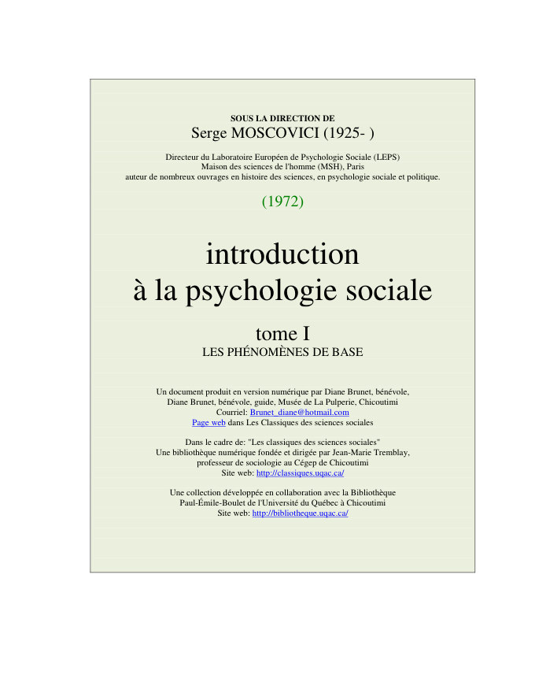

Introduction à la psychologie sociale · Tome I





Carte d’identité
- Auteur
- Serge Moscovici (dir.)
- Genre
- Savoirs
- Sous-genre
- Psychologie
- Éditeur
- Larousse
- Parution de l’édition
- 1972
- Première parution
- 1972
- ISBN
- Non confirmé
- Langue de l’édition
- Français
- Pagination imprimée
- 325 pages
- Fichier du site
- PDF · 458 pages
Tome I, Les phénomènes de base. Édition Larousse de 1972. Numérisation de Diane Brunet, Les Classiques des sciences sociales, 2013.
 Résumé du livreL’essentiel en quelques lignes
Résumé du livreL’essentiel en quelques lignes
Neuf contributions étudient ce qui se passe quand les individus interprètent une situation, se regroupent ou s’influencent. Le volume relie des expériences à des concepts comme la conformité, la catégorisation et la représentation sociale. Chaque chapitre donne le point de vue de ses propres auteurs.
 Chapitre par chapitre9 entrées
Chapitre par chapitre9 entrées
-
01 Jouer un rôle et changer d’avis
Jozef Nuttin étudie ce qui se passe quand une personne défend un point de vue qu’elle ne partage pas. Il compare les effets d’une mise en situation sur ce qu’elle dit et sur ses attitudes.
-
02 Interpréter les situations sociales
Serge Moscovici examine la manière dont on tire des conclusions sur les autres. Les émotions, le cadre et les informations disponibles orientent les explications de tous les jours.
-
03 Lire le comportement dans son contexte
Philip Zimbardo invite à regarder la situation, l’intrigue et les rôles dans lesquels les personnes agissent. Le comportement prend un autre sens quand on change ce cadre.
-
04 L’équilibre dans les relations
François Léonard présente le modèle de Heider. Il s’appuie sur des relations entre personnes et objets pour expliquer pourquoi certaines combinaisons nous paraissent plus cohérentes que d’autres.
-
05 Majorités et minorités
Moscovici et Ricateau distinguent la formation d’une norme, la conformité à un groupe et les changements que peut provoquer une minorité. Ils s’intéressent à la négociation qui accompagne ces influences.
-
06 Attrait, rejet et justification
Dana Bramel étudie le rôle de la ressemblance dans l’attirance. Le chapitre examine également les opinions qui peuvent servir à justifier un tort causé à autrui.
-
07 Les règles du conflit
Michel Plon compare des façons de modéliser les conflits et la coopération. Les jeux expérimentaux lui servent à explorer l’effet de l’image que l’on se fait de l’autre.
-
08 Classer le monde social
Henri Tajfel montre que les catégories aident à se repérer. Dans le monde social, elles prennent aussi une valeur et participent à la manière dont on définit son groupe et soi-même.
-
09 Des idées que l’on construit ensemble
Claudine Herzlich présente la notion de représentation sociale. Elle examine comment les conversations, les valeurs et les conduites donnent une forme commune à une idée.
Les fils du livre


Mon carnet de lecture
Mes étoiles
0 critique
Ma critique sur ce livre ↗